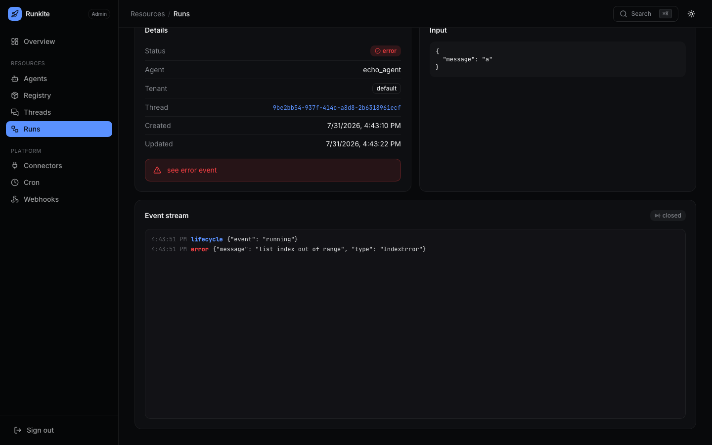
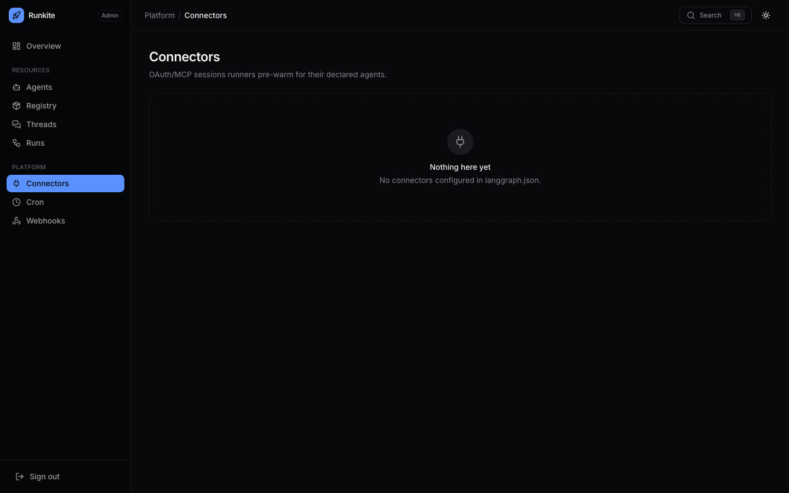
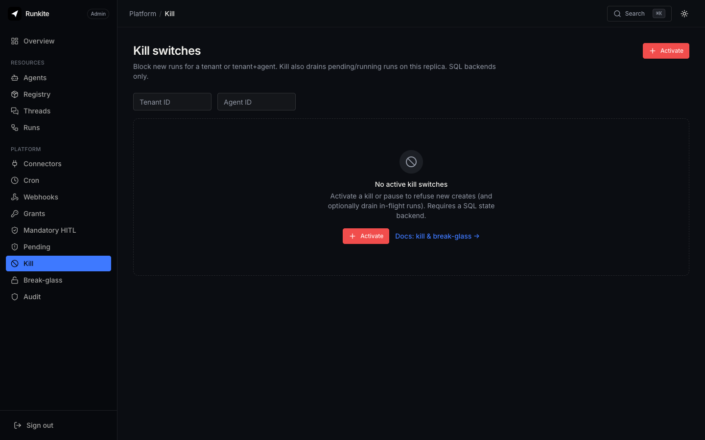
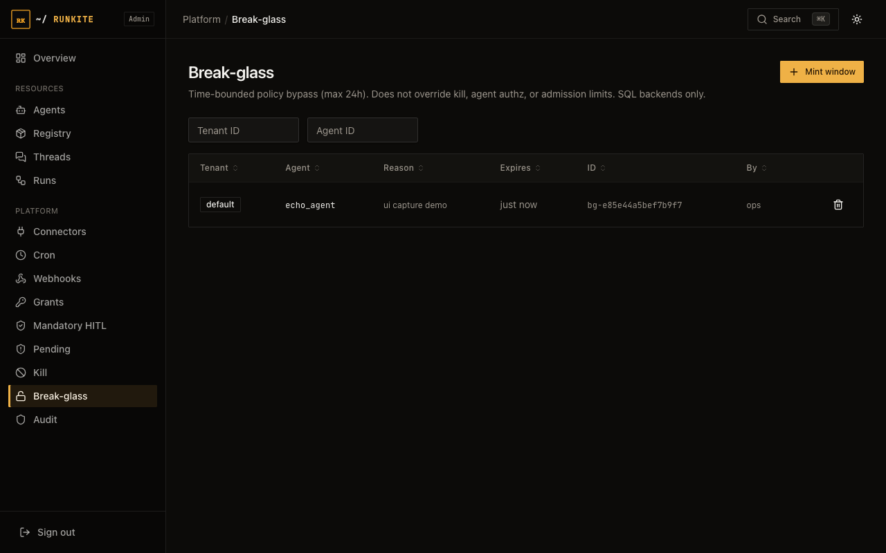
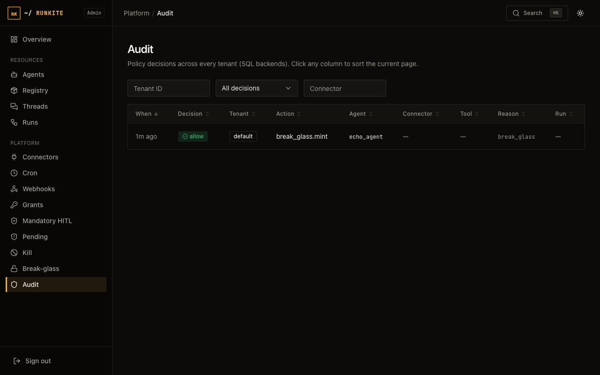

Start
Admin UI guide
Everything you can see and do in the Admin dashboard, one section at a time. If you just want to log in, see Admin login first — this page picks up from there and walks through every screen you land on afterward.
The Admin dashboard has 15 screens, grouped the same way the left-hand nav inside Admin groups them: general visibility, then governance (who can do what), then spend. For each screen below you get four things: what it's for in plain language, what you'll actually see on the page, how to use it step by step, and things that trip people up.
Before you start: getting into Admin at all
Open http://<your-host>:2026/admin/ in a browser. What happens next
depends on whether you turned auth on:
- No auth configured (local/dev) — you land straight on Overview, no login screen. This is normal for a laptop demo, not something to "fix."
-
Auth configured — you get a login card asking for an API key or JWT.
It only accepts a credential that has the
adminpermission — a normal read/write client key will not work here, on purpose (client keys are scoped to one tenant; Admin sees every tenant). Full details, including the exactlanggraph.jsonsnippet to add an admin key, are on Admin login.
Once you're in, the left sidebar inside Admin lists every screen below. Nothing here requires editing a config file to "turn on" — every screen is always present; what changes based on your setup is whether it has data to show (e.g. Cron is empty until you register a scheduled agent) or whether it works at all (the governance screens need a SQL state backend — Postgres, MySQL, or SQLite — and return a friendly "not available on this backend" message on Mongo).
1. Overview
What it's for: the landing page after login. A single glance at how busy the plane is right now, across every tenant.
What you'll see: counts of agents, threads, and runs, with runs broken down by status (pending / running / success / error / interrupted). These are real database counts computed on the spot, not a rough estimate.
How to use it: there's nothing to configure here — it's read-only. Check it after a deploy to confirm the plane sees your agents, or when triage starts ("why do we have 40 pending runs?") as the first stop before drilling into Runs.

2. Agents
What it's for: the list of every agent the plane currently knows about — the things you can actually create a run against.
What you'll see: agent ID, which tenant it belongs to, and its
declared input/output schema. Agents show up here automatically the moment the
control plane boots and reads your langgraph.json (or a runner
registers one dynamically) — there is no "add agent" button in Admin, because agents
are code, not admin config.
How to use it: click an agent to see its full detail — schema, version, and metadata. Use this page to sanity-check that a newly deployed graph is actually visible to the plane before you try to run it from a client.

If an agent you just deployed is missing here, check the runner's logs for a config parse error before assuming Admin is broken — this list mirrors exactly what the runner reported at boot.
3. Registry
What it's for: a searchable catalog of agent definitions with version history — useful once you have more than a couple of agents and need to answer "what changed in v3 of the support-bot agent, and when."
What you'll see: published entries, each with a version list. Every time you re-publish an agent under the same name, a new version is recorded instead of overwriting the old one.
How to use it: browse or search by name, then open an entry to see every version that's ever been published, oldest first. This is view-only in Admin — publishing happens from your CI/CD or the Registry API, not by clicking a button here.

4. Threads & Runs
What they're for: the operational core of Admin — this is where you go to answer "what did this specific execution actually do." A thread is a conversation (it can span many turns and many runs); a run is one single execution inside a thread.
What you'll see: Threads lists every thread across every tenant, with a filter by status. Click a thread to see every run that happened inside it. Runs lists every run directly, filterable by status, agent, or thread — useful when you already know the run ID or agent you're chasing and don't want to go through a thread first.
How to use a run's detail page — the part people miss:
- Click into any run from either list to open its detail page.
- You get a live or replayed event stream — the exact same token-by-token / step-by-step events the client SDK would have seen, but viewable after the fact. If the run is still going, it streams live; if it already finished, you're replaying its recorded history.
- This is the single best tool for debugging "the agent did something weird" — you see every tool call, every value the graph produced, and the final status, in order, without needing to reproduce the run yourself.
- A Cancel action is available on any non-terminal run, from any tenant — useful when something is stuck or looping and you don't want to wait for it to time out on its own.


5. Connectors
What it's for: a live status board for every external service (Salesforce, GitHub, your internal APIs, etc.) your agents are configured to call through the plane.
What you'll see: each configured connector, whether it's currently healthy, and its circuit breaker state (closed = healthy and calling through normally, open = the plane stopped calling it after repeated failures so a broken third-party API can't take down every agent that depends on it).
How to use it: this page is read-only — connectors are configured in
langgraph.json, not clicked into existence here. Use it to spot a tripped
circuit breaker before a user reports "Salesforce lookups stopped working," and to
confirm a new connector actually loaded after you deployed it. Full configuration
steps (auth types, secrets, tool allowlists) are on the
Connectors & HITL page.

6. Cron
What it's for: visibility into every scheduled ("run this agent every hour") agent across every tenant.
What you'll see: each schedule, its cron expression, and when it last fired. If you're running more than one control-plane replica, this is also where you'd confirm a schedule only fired once — the plane uses a claim mechanism so two replicas racing to fire the same schedule at the same second don't double-run it.
How to use it: read-only here too — schedules are created via the Agent Protocol API or config, not from this screen. Check this page when a scheduled job "didn't run" (is it even registered?) or "ran twice" (did two replicas race — see Cron for the claim mechanism that's supposed to prevent this).

7. Webhooks
What it's for: Runkite can POST events (a run finished, a tool was called, a policy decision happened) to a URL you configure. This page is where failed deliveries land so you don't lose them silently.
What you'll see: a list of "dead letters" — deliveries that failed after retrying — each with the event payload that was going to be sent.
How to use it:
- Find the failed delivery for the event you're missing on your receiving end.
- Fix the actual problem first (your endpoint was down, returned a 500, etc.) — this page doesn't diagnose that for you.
- Click Redeliver to re-POST the exact stored payload. Note: if your webhook uses a signing secret, the redelivery is not re-signed (the secret isn't kept around after the original send), so a receiver that strictly verifies signatures needs to special-case redeliveries or you re-trigger the event another way.

8. Grants (Policy Grants)
What it's for: the allowlist that decides which agent can use which connector, and which specific tools on that connector. Without a grant, a connector call is denied by default — this is a safety default, not a bug you need to work around by disabling something.
What you'll see: a table of grants — each one says "agent X may use
connector Y" (optionally scoped to specific tool names). You can also set static
grants in langgraph.json; the ones you create here live in the database
and layer on top.
How to create one:
- Click New grant.
- Pick the tenant, the agent, and the connector this grant applies to.
- Optionally restrict it to specific tool names — leave it open to allow every tool the connector exposes.
- Save. The change takes effect on the replica you're talking to immediately, and on every other control-plane replica within about 15 seconds (they poll for changes — there's no manual "sync" step).
Edit or delete a grant the same way, from the same table.

9. Mandatory HITL
What it's for: force a human approval step for a connector or tool class, regardless of what any grant says. Use this for anything you never want an agent to do fully autonomously — sending an email, making a payment, deleting a record — even if the agent is otherwise trusted with that connector.
What you'll see: a table of rules, each one saying "any call to connector X (optionally, specific tool Y) must pause for approval." Runs that hit a rule here don't fail — they pause and wait, and show up in the Pending screen (next section) for someone to approve or deny.
How to create one:
- Click New rule.
- Pick the tenant, connector, and (optionally) the specific tool. Leaving the tool blank means every tool on that connector requires approval.
- Save. Like grants, this rolls out to every replica within about 15 seconds.

10. Pending (approval queue)
What it's for: the inbox for every connector call that's currently paused waiting for a human — whether it paused because of a Mandatory HITL rule above, or because the agent code itself asked for approval before a sensitive action.
What you'll see: a list of pending actions, each showing which run triggered it, which connector/tool it wants to call, and with what arguments — so you can actually see "the agent wants to send this exact email to this exact address" before deciding.
How to approve or deny:
- Open a pending action and read what it's actually asking to do — the tool name and its arguments are shown in full.
- Approve — the plane mints a one-shot permission for exactly that next matching call, the run resumes, and the tool executes normally.
- Deny — the run resumes with a denial instead; your agent code decides what to do next (retry differently, tell the user, give up).
Approving here does not create a standing grant — it's a one-time unlock for this specific paused call. The next time the agent tries the same thing, it pauses again unless you've also added a Grant or removed the Mandatory HITL rule.

11. Kill switches
What it's for: the emergency stop button. Use this when something is actively causing harm right now and you need every run for a tenant (or one specific agent within a tenant) to stop immediately, not after a code deploy.
How to use it:
- Pick the scope: an entire tenant, or one agent within a tenant.
- Choose kill (stop new runs from starting and cancel every currently running/pending run in scope) or pause-only (stop new runs from starting, but let anything already in flight finish normally).
- Save. This takes effect immediately — no waiting for a poll interval.
- When the incident is over, come back to this page and clear the switch to resume normal operation.
A kill switch is not the same as Break-glass below — kill always wins. Break-glass cannot override a kill switch, by design.

12. Break-glass
What it's for: the opposite emergency tool — a short, time-boxed window where normal connector policy checks are bypassed, for situations like "policy is misconfigured and blocking a legitimate call and we need it to work in the next five minutes while we fix the actual rule."
How to use it:
- Click New window.
- Pick the scope (tenant, or tenant+agent), write a reason (required — this shows up in the audit trail), and set an expiry. The maximum window is 24 hours; you cannot open a longer one.
- Save. Connector policy checks in scope now pass automatically until the window expires or you revoke it.
- Revoke early any time from this same page — normal policy checks resume instantly.
Break-glass only bypasses connector policy decisions. It does not override a kill switch, does not bypass authentication, and does not raise spend budgets or run limits — those are separate controls that stay in force even during a break-glass window.

13. Audit
What it's for: the searchable paper trail of every policy decision the plane has made — every allow, every deny, every pending-for-approval, with who, what, and why.
What you'll see: a filterable table — by tenant, agent, connector, tool, run, or a date range. Each row shows the decision, the reason code behind it, and which rule (grant, mandatory-HITL rule, or break-glass window) produced it.
How to use it: this is your answer to "prove that agent X was not allowed to touch connector Y last Tuesday" or "show me everything that happened during that break-glass window." Filter down to the scope you care about; there's no write/edit action here — it's a read-only historical record.

14. Spend (FinOps)
What it's for: how much your agents are actually costing you, and the budget guardrails that stop a runaway agent from generating a five-figure LLM bill overnight.
What you'll see: daily token and estimated USD usage, broken down by tenant and agent, plus any budget alerts that have fired (approaching a limit, a hard cap that blocked new runs, or an in-flight run that got cancelled because a hard cap was breached mid-run). You can also export the usage rollup as CSV or JSON.
How to use it: budgets themselves are configured in
langgraph.json (a hard cap on USD/tokens/runs per day, per tenant or per
agent) — this page is where you watch them and export the numbers for a monthly
report. See Spend (FinOps) for how to actually set a budget.

Screens that need a SQL state backend
Grants, Mandatory HITL, Pending, Kill switches, Break-glass, Audit, and Spend all store their data in your state database. On Postgres, MySQL, or SQLite this works exactly as described above. On MongoDB, these screens show a clear "not available on this backend" message instead of failing silently or showing stale data — governance durability on Mongo is on the roadmap, not silently unsupported.
Quick answers to the questions people actually ask
- "I can't log in with my normal API key." — that key doesn't have the
adminpermission. See Admin login for the exact config to add one. - "A run is stuck, how do I stop just that one?" — open it from Runs and use Cancel. Kill switches are for stopping everything in a tenant/agent, not one run.
- "An agent tried something and nothing happened." — check Pending; it's probably waiting on a Mandatory HITL rule or an approval the agent itself requested.
- "I changed a grant and it's not working." — give it up to ~15 seconds if you're on a different replica than the one you edited it on; every replica polls for overlay changes on that interval.
- "Governance pages are erroring out." — you're likely on MongoDB; those pages require Postgres, MySQL, or SQLite.
Reference:
docs/admin.md
(full /admin-api/* route list)
·
Admin login
·
Grants & HITL
·
Kill & break-glass
·
Spend (FinOps)